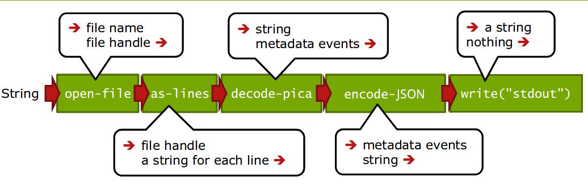
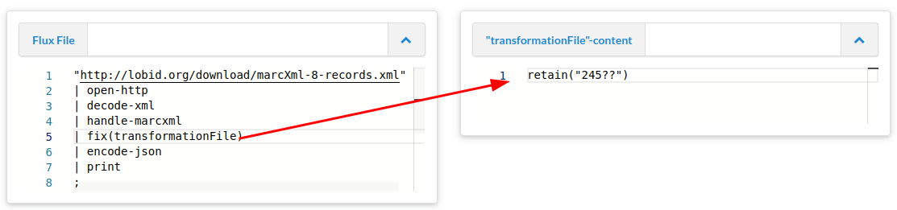
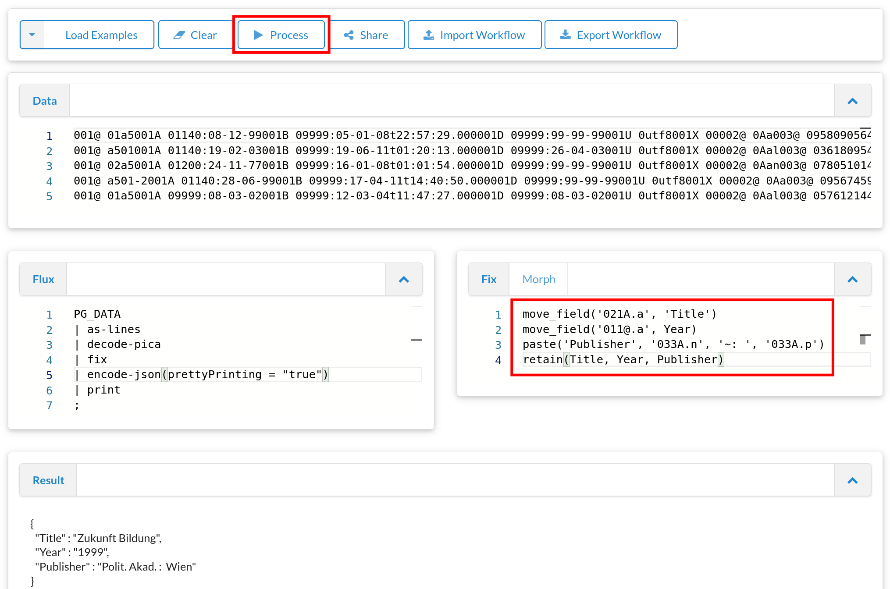
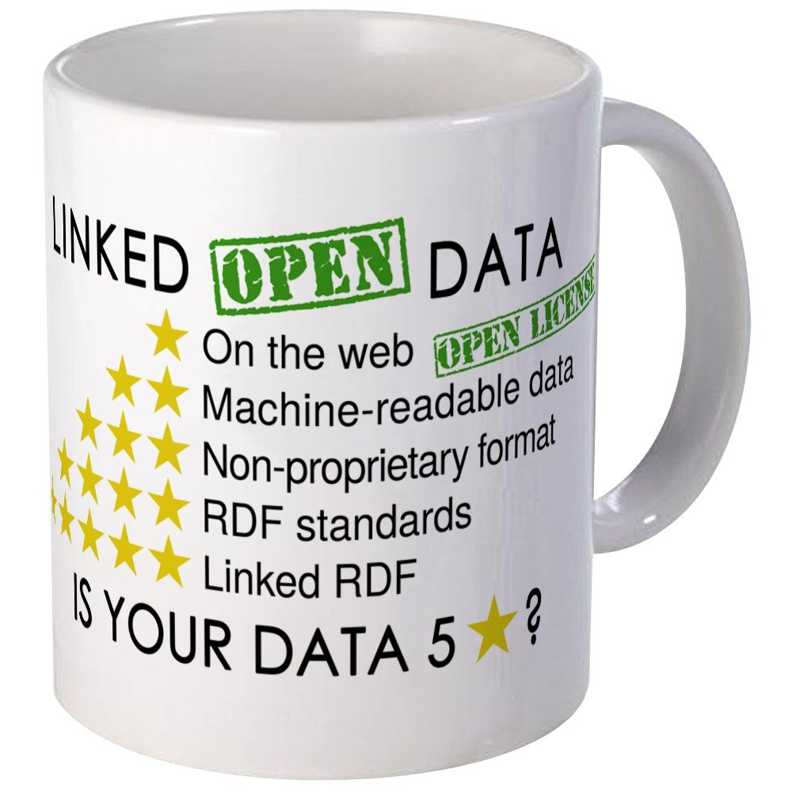

Creating LOUD with Metafacture
Pascal Christoph
&
Tobias Bülte
Metadateninfrastruktur,
Hochschulbibliothekszentrum NRW (hbz)
Workshop
SWIB 23
Berlin, 11. September 2023
https://slides.lobid.org/2023-09-metafacture-workshop-swib/ :
(PDF)

Who are we ?
We are Pascal and Tobias.
Pascal is a software engineer. Tobias is a librarian.
We are both part of the Metadateninfrastruktur-Team at hbz. fka. lobid, offene Infrastruktur.
Who are we 2/2 ?
Metadateninfrastruktur is a mixed team of librarians and developers.
We engage in everything open:
open source
open data
open standards
Who are you?
Let's team up in pairs and introduce yourself in 5 minutes. Ask your interview partner e.g.:
- Tell your name and a little bit about your job
- Do you have any knowledge in data transformation?
- In Linked Open Data ?
- What do you expect from this course?
- Optional: fun fact about you
- After the 5 minutes: introduce to us your interview partner
Agenda
Part I: Metafacture and Motivation (10m)Part II: Getting to know MF and FLUX (30m) - 15m break -
Part III: More practice and MF FIX (40m) - 30m break -
Part IV: LOUD (2h)
Part I: What is Metafacture?
Metafacture is a toolkit for processing semi-structured data with a focus on library metadata.
Metafacture can be used as a stand-alone CLI application or as a Java/JVM library in other applications.
Allows Batch- and on the fly-processing
It is also an open framework. (You can use modules on their own. It's Open Source so you can develope your own modules.)
Metafacture-Module

Autoren: Tobias & Pascal (2021-2023)
The Workshop: Why are we doing what we are doing?
Metafacture helps us to transform e.g. MARC21-XML, CSV and PICA to JSON-LD to index that into elasticsearch (JSON search engine based on lucene) for lobid to publish it as LOUD via our web API, properly documented.
The tools are very flexible so that we can easily and continuiously develope our API and our LOUD in conversation with our consumers/customers.
Metafacture is an open framework. (You can use modules on their own. It's Open Source so you can develope your own modules.)
 ·
LOUD Web APIs!
·
LOUD Web APIs!
The Workshop: Why are we doing what we are doing? 2/2
In our Workshop we want to introduce you to the tool Metafacture and show how you can transform MARC-XML to JSON-LD.
We are using the new Metafacture Playground and rely on Live Coding.
Especially the DSL FLUX and FIX do not need any special Java knowledge, so that open-minded librarians can be included in the developement and maintainance of an ETL process.
Part II: Getting to know MF and FLUX
Instead of a formal introduction to MF-FLUX lets get straigt to the Playground
Exercise 1: first steps: how to use the Playground
Exercise 2: how to open a file and read the data from it
Exercise 3: interpret a process
How does MF work?
Data runs through multiple modules
roughly like this: → read → decode → transform → encode → write →
Each module expects certain input and creates specific output ("signature") => the output of a certain modul has to match the input of the following modul
Through the combination of different modules we create a MF workflow
Example of a MF Workflow
 (from Christoph Böhme, http://swib.org/swib13/slides/boehme_swib13_131.pdf)
"fileName"|open-file|as-lines|decode-pica|encode-json|write("stdout");
(example of a "flux" file)
Metafacture-Module
Modules can be combined - given that their signature matches
MF workflows
Workflows can be configured by using:
- FLUX(the scripting language we already used in the Playground)
- Java by building a Flow(typesafe as Java Generics)
Workflows can be executed:
For getting to know MF you also can use the Playground.
MF Modules
which Modules exists?
what do they do?
what options do they have?
what is the signature (i.e. expected input and created output)
what is the name of the Java class?

Exercise 4: Pica to YAML
Exercise 5: Collect MARC-XML from the WEB and transform them to JSON
15m break ☕
Part III: More practice and FIX
Transforming Metadata from one format to another is not enough
Moving MARC to JSON and keeping the structure is NO linked data
We also have to transform elements, structure and values by manipulating the records and elements
e.g. add fields, lookup values, clean data etc.
For that we need FIX - the transformation module of Metafacture (in contrast to FLUX - which configures the broader workflow)
FIX helps us to manipulate the data on the record level
How to FIX
Before we start creating real LOUD metadata lets play around FIX
Exercise 6: Manipulating text with FIX
What is FIX
simple scripting language
inspired by Catmandu Fix
it allows you to to manipulate records and metadata elements, e.g.:
- fields can be changed, removed, filterd, separated or added
- structure and hierachy can be changed
- values can be looked up in external files
FIX concepts
# Simple Fix functions
add_field("hello", "world")
remove_field("my.deep.nested.junk")
copy_field("stats", "output.$append")
# Conditionals:
if exists("error")
set_field("is_valid", "no")
else
set_field("is_valid", "yes")
end
# Binds - Loops:
do list(path: "foo", "var": "$i")
add_field("$i.bar", "baz")
end
# Selector:
if exists("error")
reject()
end
FIX Docu
FIX User Guide FIX Functions and CookbookExercise 7:
doing some cleanup with FIXFIX Path: how to reference fields
If you want to manipulate specific elements or create a new element you need to know the FIX path to the element.
FIX-Path is a close relative of JSON-Path.Excursion: Metadata structures
Metadata example:
title: Ordinary Vices
author: Judith Shklar
publisher: Belknap Press
date: 1984
We see:
... a record /data set (a collection of metadata of that book)
... elements/fields/properties/attributes/keys
... values of these elements
Excursion: Metadata structures
The structure is often not just flat "key:value"
Subfields and Objects
author:
firstName: Judith
lastName: Shklar
<creator type="author">Judith Shklar</creator>
keywords:
- Politische Theorie
- Philosophie
- Grausamkeit
Selecting elements with FIX path
Metadata example:
id: 978-3-518-10639-6
title:
mainTitle: Öffentlichkeit und Erfahrung
subTitle: Zur Organisationsanalyse von bürgerlicher und proletarischer Öffentlichkeit
creator:
firstName: Alexander
lastName: Kluge
creator:
firstName: Oskar
lastName: Negt
Select simple top level element:
sublevel element:
repeated elements/arrays:
FIX Path: selecting specialities
Path wildcards:
Array-Wildcards:
Know your paths
use the flux commandSelecting an element
Discard any data but keep all title information from elementOutsource the FIX
FIX may get really big. You can separate it from the FLUX.  linkmove_field, paste, retain
{"a": "Faust", "b": {"n": "Goethe", "v": "JW"}, "c": "Weimar"}
{"a": "Räuber", "b": {"n": "Schiller", "v": "F"}, "c": "Weimar"}
move_field(a, title)
paste(author, b.v, b.n, '~from', c)
retain(title, author)
Practice!
Let's transform MARC-XML in simple stepsPica example
 linkLookups using external tables
Map bibliographic level from MARC leader to human readable representation by doing a lookup an a tabulator separated value file (tsv) residing at the webRDF web lookups
In Alma Marc XML we get only the identifier of "DNB Sachgruppen":
<datafield tag="084" ind1=" " ind2=" ">
<subfield code="a">340</subfield>
<subfield code="q">DE-101</subfield>
<subfield code="2">sdnb</subfield>
</datafield>
Lookup "DNB Sachgruppen" to enrich with skos:notation and skos:prefLabel
Usage of wildcards and binds
Collect all contributors from MARC21 and map those to dc:contributorAnalysis of element values
with flux command:That's it
This was our crash course "Metafacture". In Part IV we will create LOUD JSON-LD records with Metafacture. We only showed you a part of the metafacture tool box. We did not talk about: very complex transformations complex analytics., e.g. counting patterns merging different records from different sources with collect-triples30m break
Part IV (2h with a break)
LOUD introductionWhat is this LOUD?
 -
-Source:Rob Sanderson on Twitter See also Rob Sanderson’s Europeanatech 2018 Keynote (Slides Video)
Not just LOD
 ... which could look like this RDF (ntriples):
<http://lobid.org/resource/99371981001306441#!>
<http://purl.org/dc/terms/title>
"Smart grids and sustainable energy" .
{ "head": { "vars": [ "s", "p","o"] },
"results": {
"bindings": [ {
"o": {
"type": "literal",
"value": "Smart grids and sustainable energy"
},
"p": {
"type": "uri",
"value": "http://purl.org/dc/terms/title"
},
"s": {
"type": "uri",
"value": "http://lobid.org/resource/99371981001306441#!"
}
}, [...]
"contribution": [
{
"agent": {
"gndIdentifier": "135539897",
"id": "https://d-nb.info/gnd/135539897",
"label": "Elgin, Catherine Z.",
"type": [
"Person"
],
"dateOfBirth": "1948",
"altLabel": [
"Elgin, Catherine"
]
},
"role": {
"id": "http://id.loc.gov/vocabulary/relators/aut",
"label": "Autor/in"
},
"type": [
"Contribution"
]
}
],
{
"@context": "http://lobid.org/resources/context.jsonld",
"contribution": [
{
"agent": {
"gndIdentifier": "135539897",
"id": "https://d-nb.info/gnd/135539897",
"label": "Elgin, Catherine Z.",
[...]
JSON-LD
"designed to be usable directly as JSON, with no knowledge of RDF" — it's real JSON!
"also designed to be usable as RDF"
{
"@context": {
"contribution": {
"@id": "http://id.loc.gov/ontologies/bibframe/contribution",
"@container": "@list"
},
"agent": {
"@id": "http://id.loc.gov/ontologies/bibframe/agent"
},
"label": {
"@id": "http://www.w3.org/2000/01/rdf-schema#label"
},
[...]

Main thing to learn is there is not the one solution of the transformation. You have to map,you have to transform you have to try and test.
Iterate.
Improve step by step.
This is true for all work.
Let's go to https://pad.lobid.org/g4oXCsn2TbSZb5F4rSm1Nw#